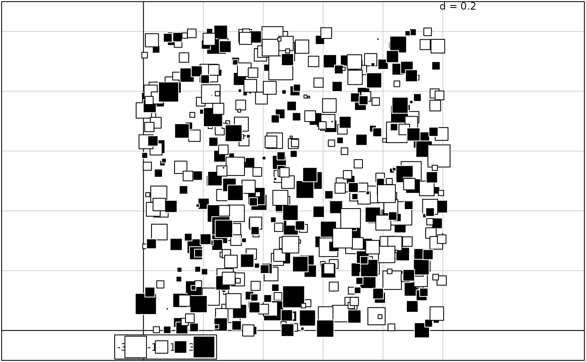
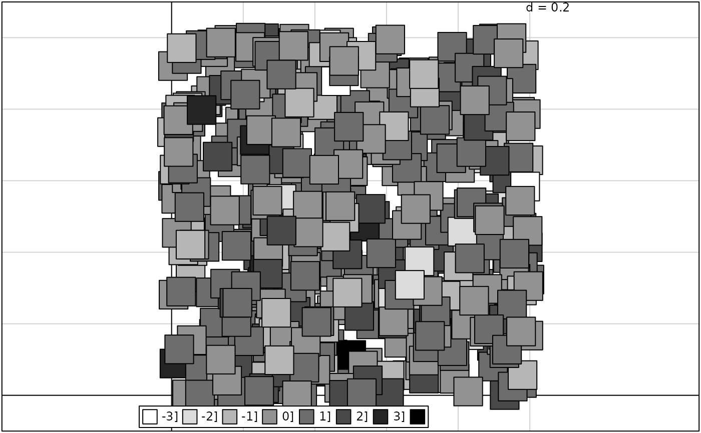
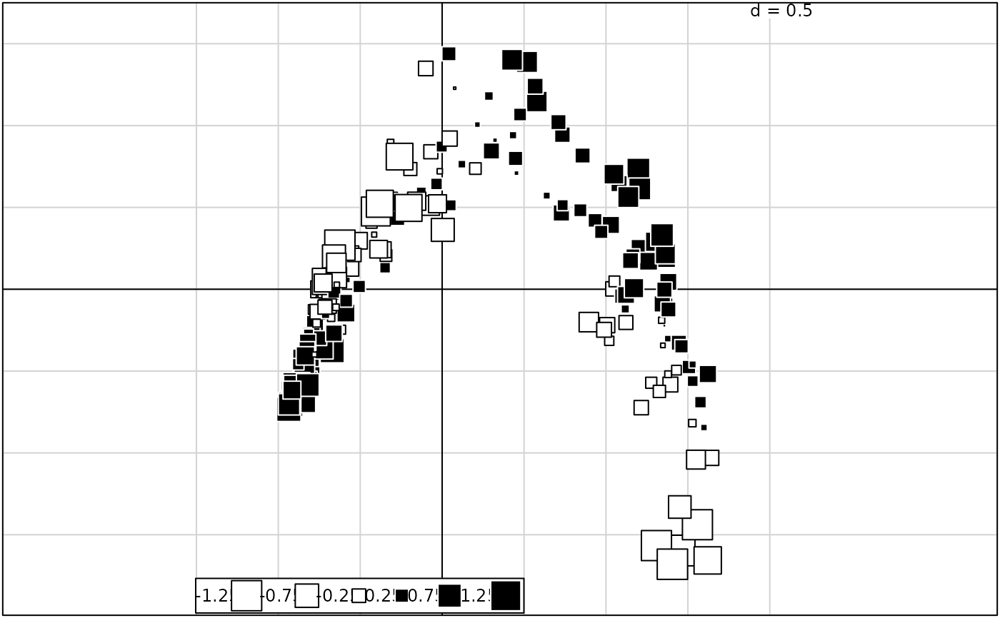
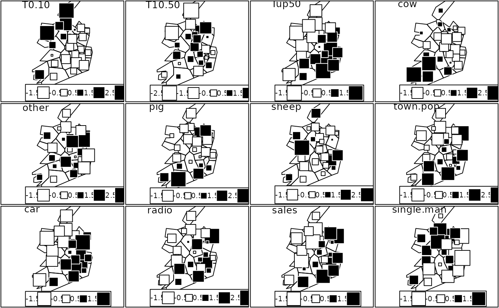

Representation of a value in a graph
s.value.Rdperforms the scatter diagram with the representation of a value for a variable
Usage
s.value(dfxy, z, xax = 1, yax = 2, method = c("squaresize", "greylevel"),
zmax=NULL, csize = 1, cpoint = 0, pch = 20, clegend = 0.75, neig = NULL,
cneig = 1, xlim = NULL, ylim = NULL, grid = TRUE, addaxes = TRUE,
cgrid = 0.75, include.origin = TRUE, origin = c(0,0), sub = "",
csub = 1, possub = "topleft", pixmap = NULL, contour = NULL,
area = NULL, add.plot = FALSE)Arguments
- dfxy
a data frame with two coordinates
- z
a vector of the values corresponding to the rows of
dfxy- xax
column for the x axis
- yax
column for the y axis
- method
a string of characters
"squaresize" gives black squares for positive values and white for negative values with a proportional area equal to the absolute value.
"greylevel" gives squares of equal size with a grey level proportional to the value. By default the first choice- zmax
a numeric value, equal by default to max(abs(z)), can be used to impose a common scale of the size of the squares to several drawings in the same device
- csize
a size coefficient for symbols
- cpoint
a character size for plotting the points, used with
par("cex")*cpoint. If zero, no points are drawn- pch
if
cpoint> 0, an integer specifying the symbol or the single character to be used in plotting points- clegend
a character size for the legend used by
par("cex")*clegend- neig
a neighbouring graph
- cneig
a size for the neighbouring graph lines used with
par("lwd")*cneig- xlim
the ranges to be encompassed by the x, if NULL they are computed
- ylim
the ranges to be encompassed by the y, if NULL they are computed
- grid
a logical value indicating whether a grid in the background of the plot should be drawn
- addaxes
a logical value indicating whether the axes should be plotted
- cgrid
a character size, parameter used with
par("cex")*cgridto indicate the mesh of the grid- include.origin
a logical value indicating whether the point "origin" should be belonged to the graph space
- origin
the fixed point in the graph space, for example c(0,0) the origin axes
- sub
a string of characters to be inserted as legend
- csub
a character size for the legend, used with
par("cex")*csub- possub
a string of characters indicating the sub-title position ("topleft", "topright", "bottomleft", "bottomright")
- pixmap
an object 'pixmap' displayed in the map background
- contour
a data frame with 4 columns to plot the contour of the map : each row gives a segment (x1,y1,x2,y2)
- area
a data frame of class 'area' to plot a set of surface units in contour
- add.plot
if TRUE uses the current graphics window
Examples
if(!adegraphicsLoaded()) {
xy <- cbind.data.frame(x = runif(500), y = runif(500))
z <- rnorm(500)
s.value(xy, z)
s.value(xy, z, method = "greylevel")
data(rpjdl)
fau.coa <- dudi.coa(rpjdl$fau, scan = FALSE, nf = 3)
s.value(fau.coa$li, fau.coa$li[,3], csi = 0.75, cleg = 0.75)
data(irishdata)
par(mfrow = c(3, 4))
irq0 <- data.frame(scale(irishdata$tab, scale = TRUE))
for (i in 1:12) {
z <- irq0[, i]
nam <- names(irq0)[i]
s.value(irishdata$xy, z, area = irishdata$area, csi = 3,
csub = 2, sub = nam, cleg = 1.5, cgrid = 0, inc = FALSE,
xlim = c(16, 205), ylim = c(-50, 268), adda = FALSE, grid = FALSE)
}
}



